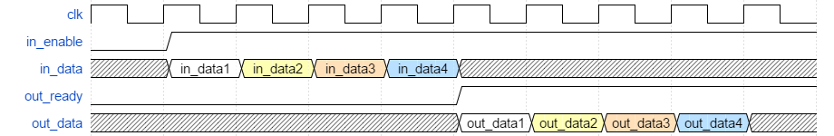
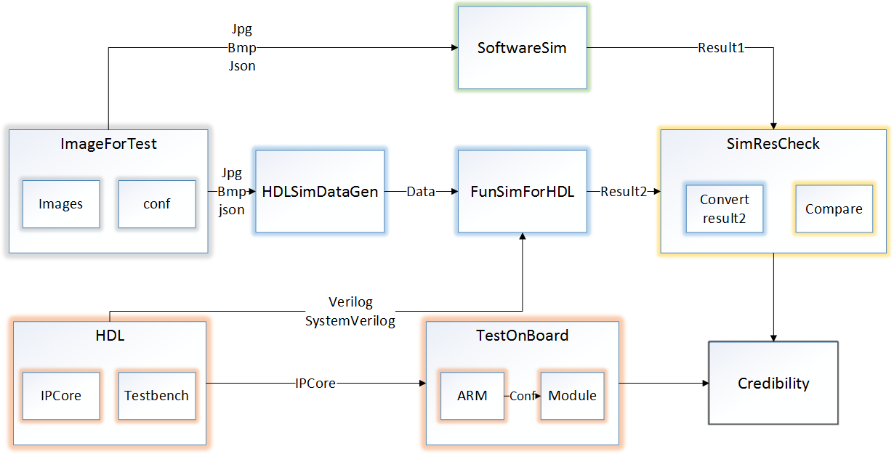

简介
FPGA在机器视觉中的作用和特点
图像预处理
高速，真并行
流水化
现有FPGA图像库
原厂：闭源，只提供基础运算
其他：需要平台支持，并且支付费用，比如NI
设计与架构
框架设计
需要规范化和易用的接口协议，可以和软件协作
接口设计
所有模块遵循相同的接口

模式设计

流水线模式
请求响应模式
IP规范
封装为Xilinx建议形式，明确的UI
设计流程
自定义测试图像+配置 -> 软件仿真 -> 功能仿真 -> 可信度分析 -> 板上测试

面向开发者的开发接口规范
def name_format(root, name, ex, conf):
def transform(im, conf):
def debug(im, conf):
软件仿真规范
def transform(im, conf):
def debug(im, conf):
软件仿真规范
def name_format(root, name, ex, conf):
def conf_format(im, conf):
def color_format(mode, color):
def create_dat(im, conf):
功能仿真数据生成规范
def conf_format(im, conf):
def color_format(mode, color):
def create_dat(im, conf):
功能仿真数据生成规范
interface TBInterface (input bit clk, input bit rst_n);
task init_file();
task init_signal();
task work_pipeline();
task work_regack();
测试平台规范
task init_file();
task init_signal();
task work_pipeline();
task work_regack();
测试平台规范
已实现模块及测试
ZYNQ
SoC
双核ARM硬核
AXI总线
软件硬件协作
测试框架
OV7670 -> 帧缓存 -> 处理模块 -> MUX -> 帧缓存 ->VGA
测试结果
测试了点操作，局部滤波器，几何变换
点操作

原始图像

灰度化
点操作

阈值化-等高线阈值化

对比度变换-增大
点操作

亮度变换-增大

色彩反转
局部滤波器

原始图像

均值滤波器
局部滤波器

排序滤波器-中值

排序滤波器-最小值
局部滤波器

局部阈值化-前置均值滤波

局部阈值化-前置中值滤波
局部滤波器
膨胀
腐蚀
几何变换

原始图像

裁剪
几何变换

镜像

平移
几何变换

缩放

错切